Technical Art projects
VR SPELLCASTING · TECHNICAL ART · GAME DESIGN
Path of Anu
Restore a fractured world by drawing magic directly into it.
A Meta Quest 3 puzzle experience where players draw magical sigils in real time, unlock celestial spells, transform the environment, and reactivate ancient seals inspired by Babylonian mythology.
- Unity
- C#
- Meta XR
- Houdini
- VFX Graph
- Shader Graph
- Meta Quest 3

Built for
Meta Quest 3
Game Designer
Unity Developer
capstone team
production cycle
and world transformation
01 / PROJECT OVERVIEW
What if spellcasting was not just an input—but the entire experience?
Path of Anu is a VR puzzle game in which players physically draw sigils with Meta Quest controllers to cast magic. Each successful spell changes the world: ruins awaken, foliage returns, lanterns ignite, corrupted statues are cleansed, and celestial beacons reconnect a broken constellation.
The project combined gameplay programming, technical art, procedural content creation, environmental storytelling, sound, and repeated user testing into a complete three-quest experience.
THE PROBLEM
Make VR magic feel physical, readable, and necessary.
Many spell systems reduce magic to a button press or use gestures only as decoration. Our challenge was to make drawing, recognizing, and applying a spell the central source of discovery and progression.
THE SOLUTION
Tie every spell to a visible transformation in the world.
Base elemental magic unlocks stronger zodiac spells. Those spells restore nature, illuminate ritual spaces, cleanse corruption, and activate celestial seals so the player's progress is always tangible.
THE IMPLEMENTATION
Connect gesture recognition, quest state, VFX, audio, and XR feedback.
The experience used Unity, C#, Meta XR tooling, ScriptableObjects, quest managers, particle systems, Shader Graph, VFX Graph, Houdini Digital Assets, sound design, and iterative headset testing.
02 / GAMEPLAY
See the magic in motion.
The video demonstrates sigil drawing, spell casting, environmental interactions, quest progression, and the visual direction of the completed capstone build.
Gameplay showcase
Path of Anu · Meta Quest 3 · Unity
03 / DESIGN VISION
A celestial world built around restoration.
I authored the original narrative, lore, game design document, quest concepts, and much of the project's aesthetic direction. Although the complete story could not be integrated within the production schedule, it established the purpose and emotional structure of the experience.
You are the final Zodiac Celestial. Your call to action is to restore balance by reactivating the seals and recovering knowledge that has disappeared from the world.
In the project's Babylonian-inspired mythology, Tiamat is the primordial goddess of chaos whose separation gives rise to order: the heavens, the earth, and the beasts of the realm. Anu, god of the heavens, divides the sky into northern and southern regions and the equatorial celestial band known as the Path of Anu—the zodiac.
The original narrative envisioned the player traveling along the Draco celestial trail, restoring each zodiac seal, uncovering the emotional essence of the signs, and ultimately confronting Tiamat. The completed capstone narrowed that scope to three polished rituals so the team could prioritize interaction quality, visuals, and a complete playable arc.
“The player does not conquer the world through magic. They repair it.”
01
Awaken
Enter a world whose celestial knowledge has been lost.
02
Learn
Use base elemental spells to understand the world's rituals.
03
Transform
Unlock zodiac powers that visibly heal and illuminate the environment.
04
Restore
Activate the beacons and reconnect the Path of Anu.
04 / QUEST DESIGN
Three rituals. Three forms of transformation.
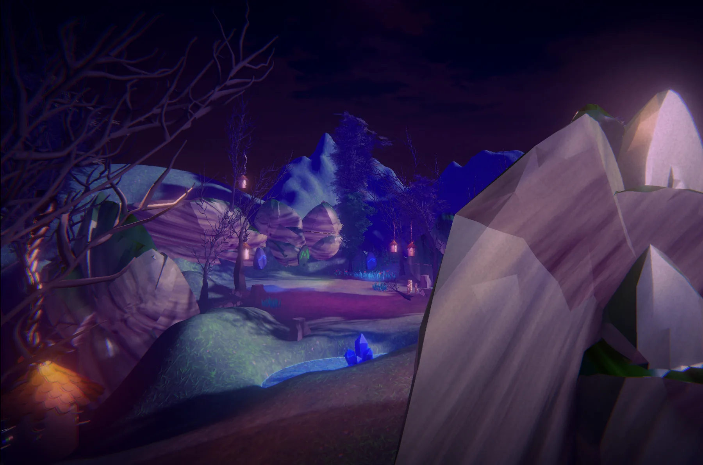
QUEST 01
EARTH · WATER · VIRGO
Restoration
Bring life back to forgotten ruins.
-
01
Strike each ancient ruin three times with Earth and Water magic to awaken it.
-
02
Complete the elemental ritual to unlock the Virgo zodiac spell.
-
03
Cast Virgo three times at each restoration site to regrow the lost foliage.
-
04
Restore every site and activate the first celestial beacon.
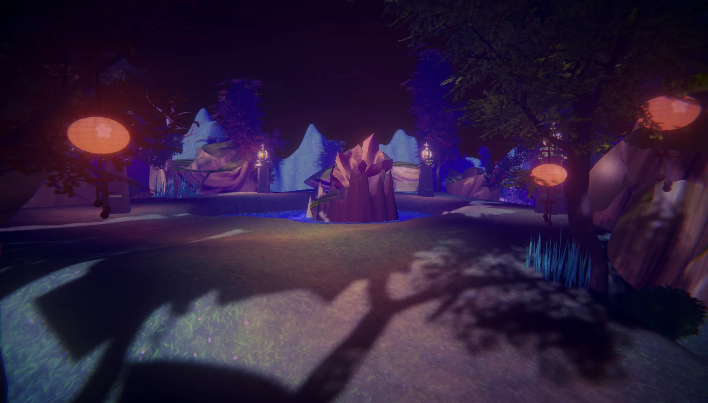
QUEST 02
FIRE · LEO
Illumination
Return light to an abandoned ritual ground.
-
01
Use the Fire spell to ignite the lanterns throughout the level.
-
02
Lighting the full sequence unlocks the stronger Leo zodiac spell.
-
03
Charge each of the five fire chambers with five Leo casts.
-
04
Complete all chambers and ignite the second celestial beacon.
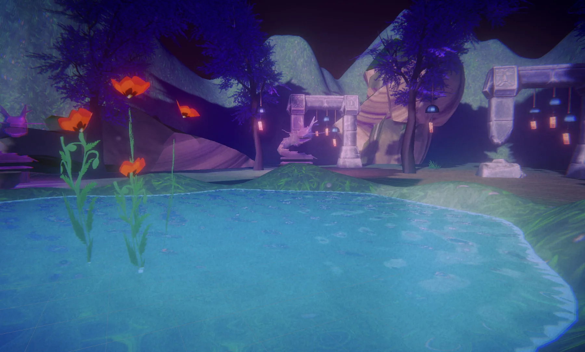
QUEST 03
WATER · AIR · PISCES · AQUARIUS
Redemption
Cleanse corrupted spirits and complete the final ritual.
-
01
Activate the water bowls and wind instruments with elemental magic.
-
02
Complete both elemental paths to unlock Pisces and Aquarius.
-
03
Use the zodiac spells to cleanse the cursed dragon shrines and finish the air ritual.
-
04
Resolve both ritual paths and activate the final celestial beacon.
05 / MY ROLE
Working between design, art, and engineering.
My goal was to use the capstone as a full production experience while developing the cross-disciplinary skills required of a technical artist. I focused on systems and tools that helped the environment, spells, and player feedback work together as one experience.
GAME DESIGN & NARRATIVE
Defined the world and its progression.
- Authored the game design document, narrative, and lore.
- Designed the restoration, illumination, and redemption quest themes.
- Contributed to mechanics, aesthetics, progression, and meaningful play.
- Connected zodiac powers to visible environmental transformation.
TECHNICAL ART & HOUDINI
Built procedural tools for faster world building.
- Created procedural rock, tree, and ivy Houdini Digital Assets.
- Exposed reusable controls for variation and level-design iteration.
- Integrated procedural assets into Unity through Houdini Engine.
- Explored artist-facing workflows that reduce repetitive asset creation.
UNITY VFX & XR DEVELOPMENT
Made every cast readable and responsive.
- Created VFX for six spells plus the wand's drawing and casting visuals.
- Used particle systems, Shader Graph, and VFX Graph for projectiles and impacts.
- Assisted with core game systems, terrain optimization, and interactions.
- Debugged XR interactions, terrain clipping, and graphical issues.
AUDIO & ITERATION
Used sound and testing to support immersion.
- Researched, selected, and implemented music and sound effects.
- Connected audio feedback to spells, environments, and quest events.
- Conducted more than 50 playtests during the ten-week production cycle.
- Translated player observations into usability and game-feel improvements.
06 / TECHNICAL IMPLEMENTATION
From a controller stroke to a world-changing spell.
The team's spell architecture separated drawing, preprocessing,
recognition, casting, and world interaction into focused
components. A central WandManager coordinated state
transitions between Idle, Drawing, Recognizing, and Casting, while
spell and gesture data were organized with ScriptableObjects for
easier iteration.
I contributed game content, VFX, procedural assets, environmental interactions, debugging, and system integration within this shared architecture. Quest managers then listened for completed objectives, unlocked new spells, enabled the next puzzle phase, and activated each beacon when a ritual was complete.
Capture the controller's movement as a three-dimensional stroke.
Preprocess the sampled points so gestures can be compared consistently.
Compare the stroke against prepared spell templates and accuracy metrics.
Spawn the corresponding spell projectile, VFX, and audio feedback.
Notify interactables and quest managers so the environment responds.
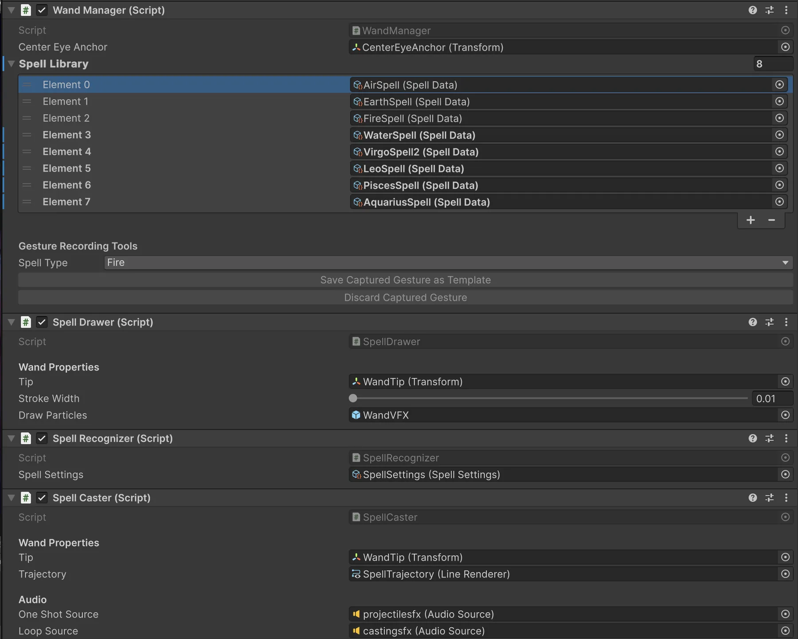
Clear phases reduced conflicting input.
Explicit states controlled when the player could draw, when the system should evaluate a gesture, and when a spell could be cast.
ScriptableObjects supported faster iteration.
Gesture templates and spell data could be edited and organized without hard-coding every variation into the controller logic.
Managers converted interactions into progression.
Each quest tracked its own objectives, unlocked zodiac spells, enabled the next interaction set, and activated a beacon VFX.
07 / ENGINEERING EVIDENCE
Inspector-level proof of the gameplay systems behind the spell interactions.
These captures are not decorative editor screenshots. They show how interaction rules and quest progression were exposed in Unity so puzzle content could be configured, coordinated, and debugged without rewriting the overall spell pipeline.
{kind=link}
INTERACTION COMPONENT
Spell requirements and visual progression are configurable per puzzle object.
The Fire Chamber Controller exposes the required spell type, completion hook, hit progress, and ordered flame VFX references. That keeps puzzle behavior reusable while still allowing scene-specific tuning.
{kind=link}
QUEST ORCHESTRATION
Progression is coordinated across many scene objects from one manager.
The Quest 2 manager references the wand system, lanterns, fire chambers, UI, beacon VFX, progression counters, and completion gates so individual interactions can roll up into a readable quest state.
08 / TECHNICAL ART
Building reusable tools for artists, not just assets.
One of my primary responsibilities on Path of Anu was developing procedural Houdini Digital Assets (HDAs) that accelerated level design and reduced repetitive environment creation. Rather than modeling every asset individually, these tools exposed artist-friendly controls that generated unique variations directly inside Unity through Houdini Engine.
Develop reusable node networks that generate geometry through parameters instead of destructive modeling.
→
Package the node network into a reusable digital asset with intuitive sliders and controls.
→
Generate variations directly inside Unity using Houdini Engine, allowing level designers to iterate without rebuilding assets.
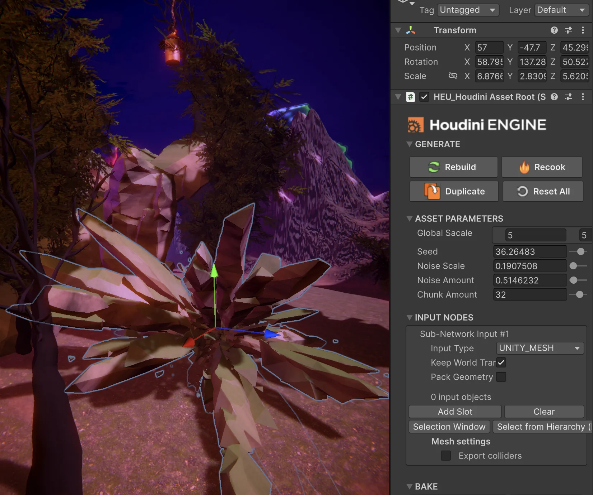
PROCEDURAL ENVIRONMENT TOOL
Rock Generator
Created a procedural rock generator capable of producing numerous stylized rock variations using adjustable parameters for shape, scale, noise, and randomness. The tool enabled rapid environment dressing while maintaining a cohesive artistic style throughout the world.
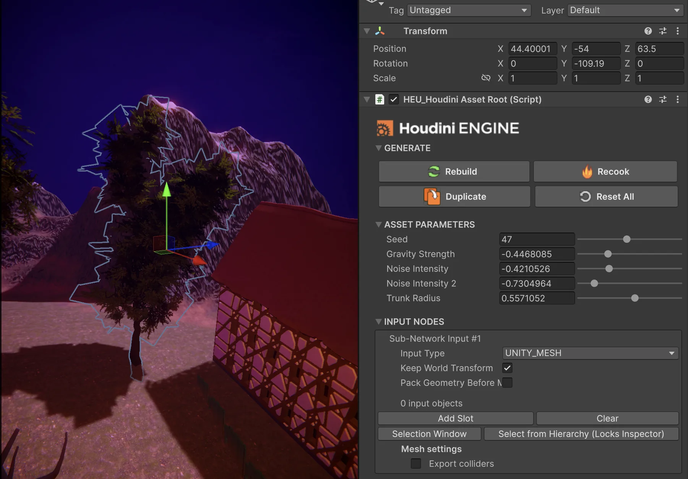
PROCEDURAL FOLIAGE TOOL
Tree Generator
Developed a procedural tree generator capable of creating stylized fantasy trees with adjustable trunk, branch, and foliage parameters. The system allowed multiple visual variations while preserving a consistent artistic direction across the environment.

PROCEDURAL FOLIAGE TOOL
Ivy Generator
Built an ivy generation tool using procedural growth techniques, allowing organic vines and foliage to quickly populate structures, ruins, and environmental surfaces. The tool reduced repetitive manual placement while supporting more variation across environment surfaces.
SPELL VFX & VISUAL FEEDBACK
Six spells. One visual language.
Alongside procedural world-building, I created spell projectiles, interaction effects, environmental VFX, and wand visuals using Unity's Particle System, Shader Graph, and VFX Graph. Each spell required a unique visual identity while remaining cohesive within the world.
- Distinct projectile silhouettes and color palettes
- Wand trails visualizing gesture-based spell drawing
- Impact effects confirming successful puzzle interactions
- Environmental VFX reinforcing ritual completion
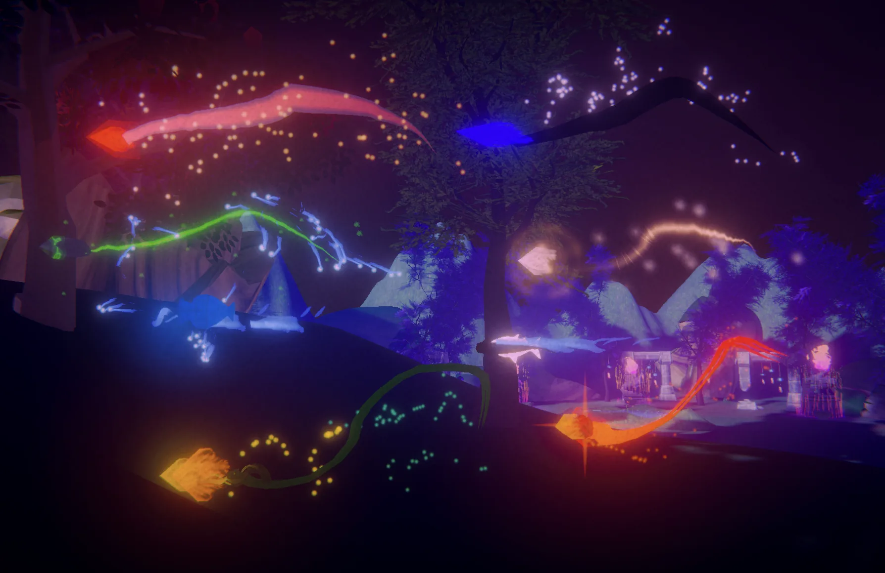
09 / SOUND & IMMERSION
Sound made invisible systems feel tangible.
I researched, selected, and implemented sound effects and music to reinforce the meaning of each interaction. In VR, audio helped players understand whether a gesture had been recognized, whether a spell had connected, and whether a ritual state had changed—even when the source was outside their immediate field of view.
Immediate feedback for gesture recognition and projectile release.
Distinct confirmation when a spell reached the correct interactable.
Layered cues that communicated unlocks, completion, and beacon activation.
50+
playtests across ten weeks
10 / PLAYTESTING & ITERATION
The headset revealed problems the editor could not.
We tested with experienced VR developers and people who had never worn a headset. Repeated observation helped us distinguish between a mechanic that was difficult by design and one that was simply unclear.
CHALLENGE 01
Players did not always understand how to reproduce a sigil.
ITERATION
Added visual spell replays and clearer drawing guidance so failed attempts became a learnable skill rather than unexplained rejection.
CHALLENGE 02
XR locomotion collided unpredictably with detailed terrain.
ITERATION
Tested lower terrain resolution, adjusted locomotion settings, flattened problem areas, and added a respawn safeguard when players clipped.
CHALLENGE 03
Magical interactions needed to read instantly in a busy environment.
ITERATION
Refined impact VFX, audio cues, environmental changes, and quest sequencing to make successful actions visible and satisfying.
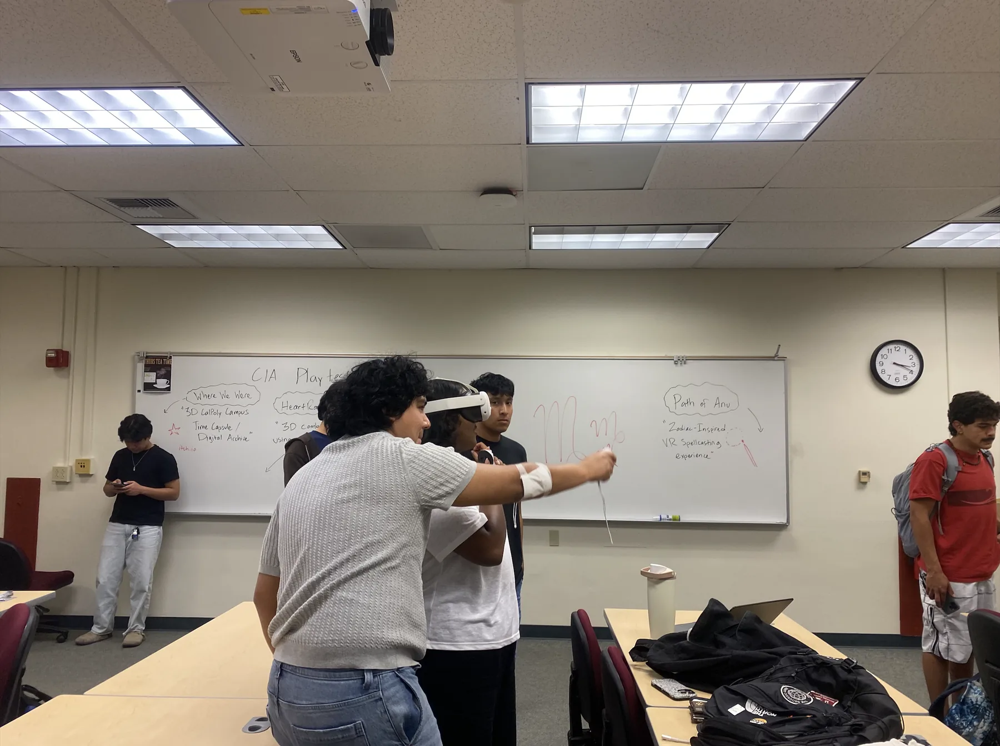
PLAYTESTING SESSION
Testing the spellcasting experience on Meta Quest 3 while observing player movement, gesture clarity, and interaction feedback.
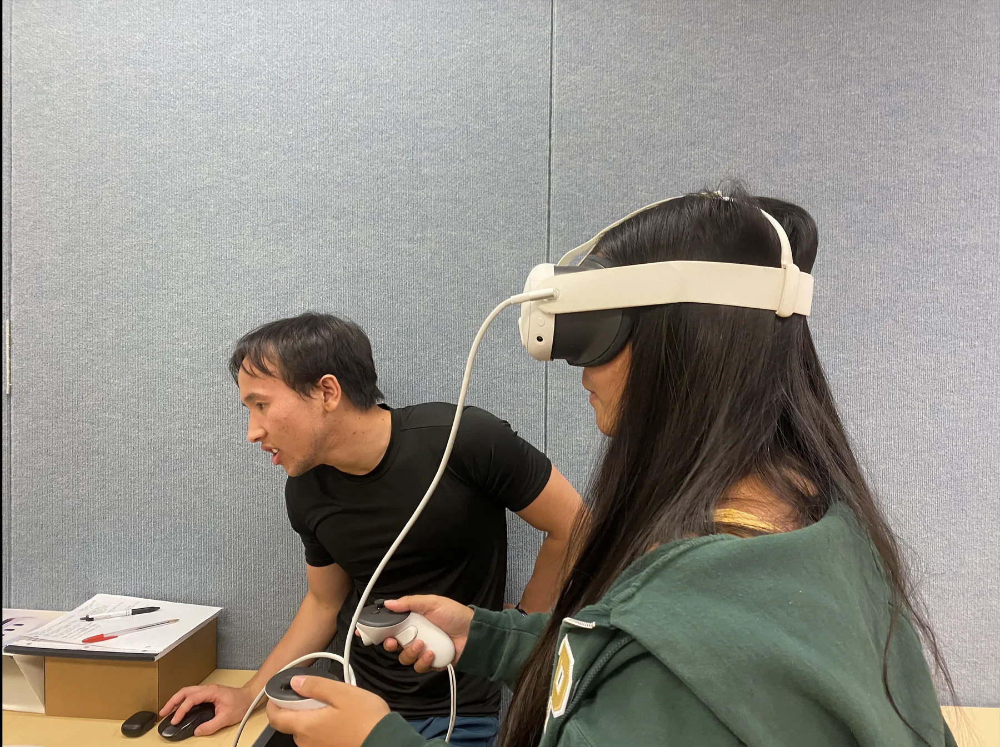
ITERATIVE DEVELOPMENT
A playtest exposed a clipping issue in the VR interaction flow, giving us a concrete bug to reproduce and fix.
11 / RESULTS
A smaller scope produced a stronger experience.
The original design included twelve zodiac quest points, expanded dialogue, deeper emotional themes, personalized zodiac compatibility, and a final confrontation with Tiamat. We reduced that scope and delivered three complete quests centered on the project's strongest technical and visual ideas.
Three fully developed quest points with clear progression and completion states.
Eight total spells: four elemental abilities and four zodiac abilities.
Purposeful environmental reactions supported by custom VFX, shaders, audio, and assets.
A complete Meta Quest 3 experience refined through more than fifty playtests.
WHAT I LEARNED
VR usability is part of the visual design.
Beautiful effects were not enough. Each spell needed a readable path, clear impact, immediate sound, and a visible consequence. Working in a headset taught me to evaluate art through interaction, comfort, scale, and player attention—not only through screenshots.
PRODUCTION LESSON
Scope is a design decision, not just a scheduling decision.
Reducing twelve planned quests to three complete rituals allowed us to preserve the core fantasy and improve what players would actually touch, see, and understand. A smaller polished arc communicated the idea better than a larger unfinished one.
CAREER IMPACT
The project confirmed my interest in technical art.
Path of Anu showed me how much I enjoy bridging artists and engineers: building tools, integrating effects, debugging systems, and protecting the visual intention of a world while keeping it functional in real time.
12 / FUTURE WORK
The original vision still points forward.
These features were part of the intended direction but were not completed in the capstone build. They show where I would take the experience with additional development time.
Complete the zodiac arc
Expand from three ritual areas to twelve quests, one for each zodiac sign.
Integrate the full narrative
Add scripted dialogue, voice performance, emotional themes, and the final Tiamat confrontation.
Expand the HDA toolkit
Create additional procedural buildings, trees, foliage, terrain, and placement tools.
Optimize world streaming
Investigate chunk rendering, culling, terrain optimization, and scalable VR level construction.
Deepen spell identity
Connect available spells and interactions to the player's zodiac compatibility and progression.
Produce original audio
Compose music, record dialogue, and build a more reactive audio system around rituals and exploration.
13 / DEVELOPMENT GALLERY
From world building to final gameplay.
A selection of final screenshots and development images showing the visual direction, spellcasting systems, procedural tools, and quest progression behind Path of Anu.
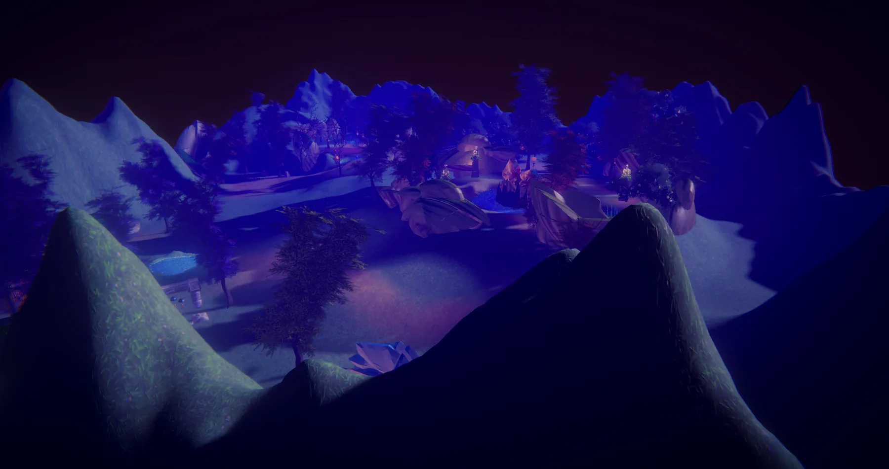
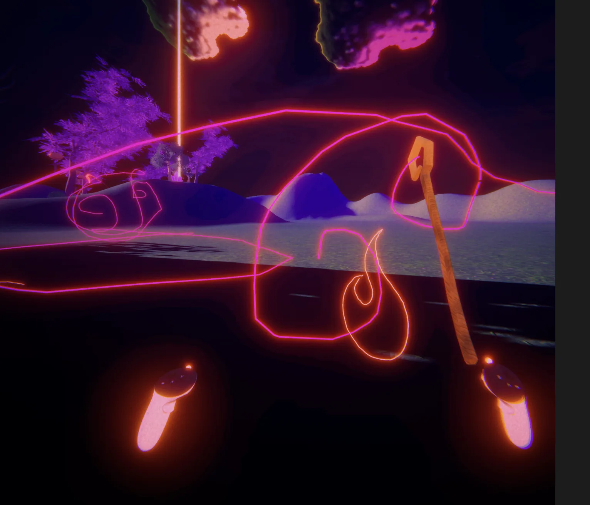


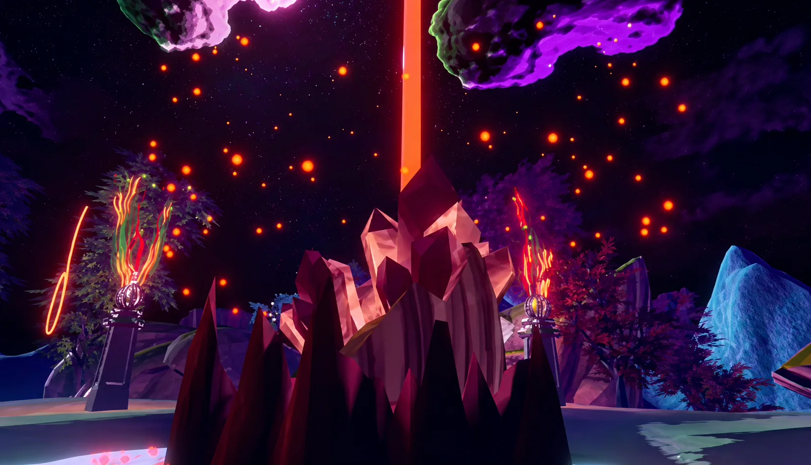
Technical Documentation
Houdini Workflow Documentation
Path of Anu was also an exercise in communicating a procedural workflow clearly enough for another artist or developer to follow. The documentation breaks down the production problem, node-network structure, exposed HDA controls, Unity integration, and the iteration path from procedural graph to in-engine environment asset.
This document captures the procedural workflow behind the Path of Anu environment tools, including node-network structure, artist-facing parameters, Houdini Engine integration, and the iteration path from procedural graph to in-engine asset.